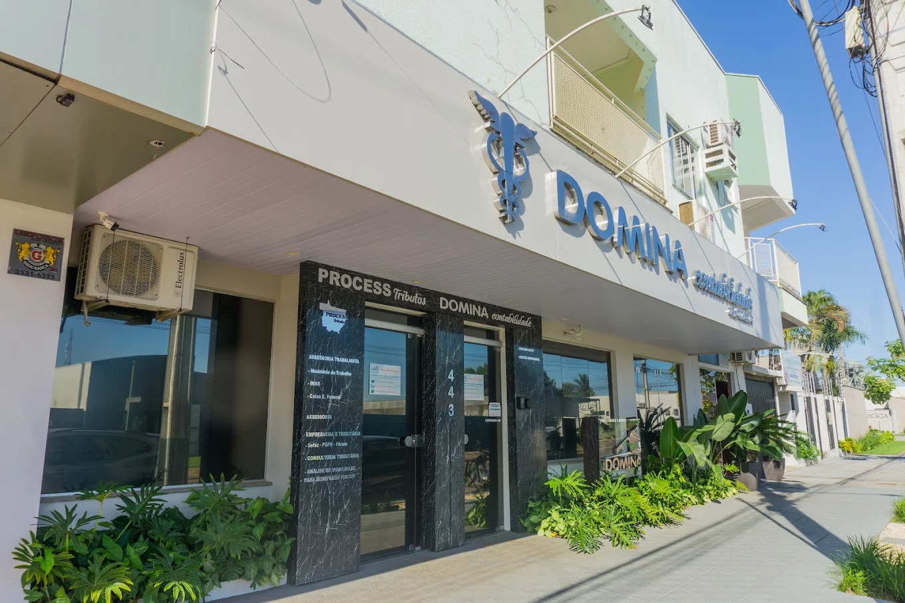
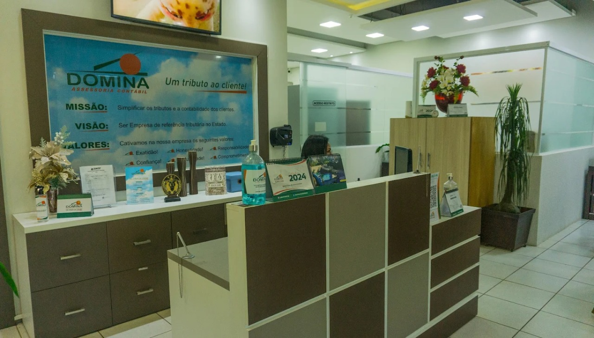
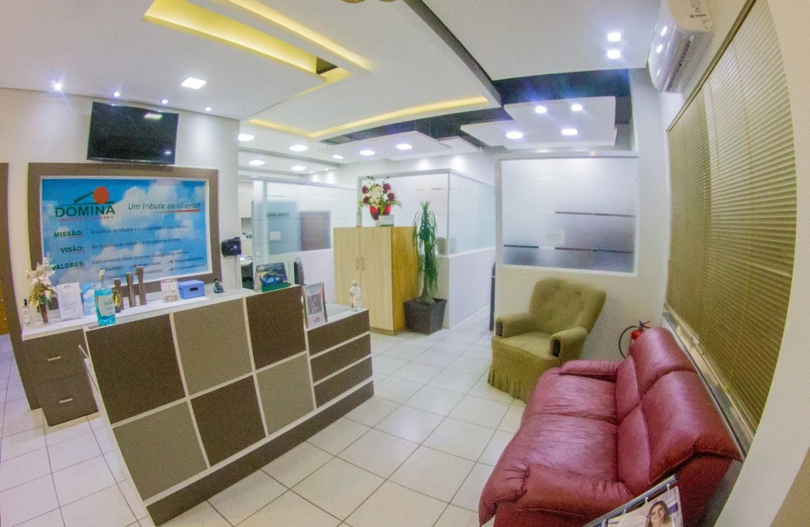
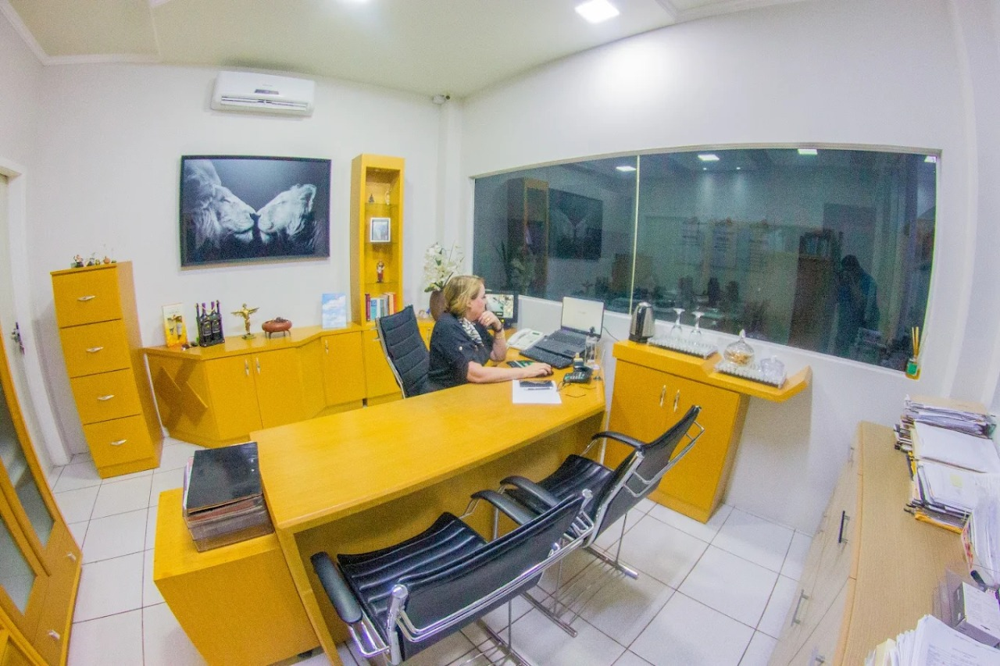

Escritório de contabilidade em Sinop/MT com atuação desde 1995
Contabilidade que organiza o presente da empresa e abre espaço para a próxima decisão.
A Domina Assessoria Contábil evoluiu de um escritório tradicional para uma operação consultiva, liderada por Apolônia Delavy, com foco em segurança fiscal, inteligência tributária e rotina financeira mais clara para empresas de Mato Grosso.
Busca comum do seu público:
escritório de contabilidade em Mato Grosso

Foco consultivo
Planejamento tributário com leitura estratégica para decisões mais seguras.
Rotina integrada
Fiscal, folha, legalização e escrituração alinhados no mesmo fluxo.
Estrutura de serviço
Uma base contábil firme para rotina, compliance e crescimento.
A Domina atende momentos diferentes da empresa sem tratar tudo como pacote genérico: organiza a operação, reduz ruído fiscal e ajuda a decidir com mais clareza.
01
Escrituração contábil e fiscal com leitura contínua do negócio
Organização dos registros, acompanhamento fiscal e consistência documental para manter a empresa em dia e com base confiável para tomada de decisão.
- Lançamentos e conciliações contábeis
- Rotinas fiscais e apurações
- Suporte para conformidade legal
02
Folha de pagamento tratada como operação crítica, não como detalhe administrativo
Processos trabalhistas e de pessoal conduzidos com precisão para reduzir retrabalho e manter previsibilidade.
admissão
fechamento mensal
encargos
obrigações acessórias
03
Abertura e fechamento de empresas
Legalização com menos atrito, orientação prática e acompanhamento das etapas mais sensíveis.
04
Planejamento tributário para pagar com estratégia, não no automático
Inteligência tributária aplicada à realidade da empresa para buscar eficiência financeira com segurança.
Atuação feita para empresas que precisam de presença, clareza e resposta rápida.
Atendimento presencial em Sinop, leitura consultiva da rotina empresarial e acompanhamento próximo da equipe responsável pela operação contábil.
Conversar sobre meu cenárioDiagnóstico consultivo
Sinais de que a empresa precisa de mais leitura estratégica e menos contabilidade no automático.
As campanhas da Domina traduzem bem o que aparece no dia a dia do empresário: imposto pago a mais, falta de clareza sobre regime tributário e pouca visibilidade sobre os números que realmente movem a operação.
Quando a empresa não sabe se está na estrutura mais adequada, perde margem e previsibilidade.
Sem leitura contábil e financeira conectada, a rotina cresce, mas a decisão continua no escuro.
Pequenos erros recorrentes viram multa, retrabalho e desgaste com obrigações que poderiam estar sob controle.
Alerta fiscal
Erros simples costumam custar caro quando passam despercebidos.
A Domina trabalha para reduzir esse tipo de ruído com acompanhamento mais próximo, organização de rotina e leitura tributária conectada ao momento da empresa.
História e autoridade
Três décadas de presença local, com evolução para uma contabilidade mais estratégica.
A Domina nasceu nos anos 90 e manteve continuidade até se consolidar formalmente em julho de 2001. Ao longo desse percurso, saiu do modelo puramente operacional e reforçou uma atuação consultiva, centrada em inteligência tributária, eficiência financeira e segurança para o empresário crescer com menos incerteza.
1995
Início da trajetória
Atuação iniciada em Sinop, com base construída na rotina empresarial da região.
2001
Consolidação formal
Registro da Domina Contabilidade Ltda com o CNPJ atual em julho de 2001.
Hoje
Atuação consultiva
Contabilidade, fiscal, pessoal e planejamento tributário conectados à decisão do empresário.
Conheça o espaço
Um ambiente preparado para receber empresas com organização, proximidade e atendimento presencial.
A estrutura da Domina reforça a proposta de um atendimento próximo: recepção acolhedora, ambiente interno bem distribuído e localização fácil para quem quer resolver a rotina contábil com apoio presencial em Sinop.
Localização
Presença local em uma região de acesso simples para empresas de Sinop.
A Domina está na Rua das Caviúnas, 443, no Setor Comercial, em um ponto de referência que facilita o atendimento presencial e o contato direto com a equipe.
Abrir localização no mapa


Conteúdo com direção
As campanhas da Domina agora reforçam a narrativa do site com temas que fazem sentido para quem empreende.
Em vez de uma galeria solta, as artes entram como extensão da proposta consultiva: abrir empresa com menos atrito, entender os números com clareza e usar a contabilidade como ferramenta de crescimento.
Visão de valor
Contabilidade tratada como investimento, não só como obrigação mensal.
Esse posicionamento aproxima a marca de empresas que querem mais do que envio de guias: querem contexto, leitura de cenário e apoio para decidir com mais segurança.
Crescimento comercial
Uma operação mais organizada também ajuda a vender melhor.
Quando financeiro, fiscal e rotina gerencial conversam, o empresário ganha margem para escalar sem improviso.
Leitura financeira
Quem não entende os números da empresa perde velocidade na tomada de decisão.
A proposta da Domina fica mais tangível ao mostrar que assessoria contábil também é clareza de gestão.
Escala com método
A pergunta certa não é só quanto a empresa faturou, mas se ela está crescendo com estrutura.
Essa abordagem reforça o papel consultivo da equipe para quem quer crescer com menos ruído operacional.
Conteúdo educativo
Educação fiscal também fortalece autoridade e aproxima novos atendimentos.
Como a Domina trabalha
Um fluxo claro para transformar obrigação contábil em gestão mais segura.
Leitura inicial
Entendimento da estrutura da empresa, da rotina atual e dos pontos que mais geram ruído.
Organização operacional
Alinhamento das rotinas contábeis, fiscais e de pessoal para estabilizar a operação.
Controle e conformidade
Monitoramento das obrigações e manutenção da base legal e documental da empresa.
Visão tributária
Leitura estratégica para decisões mais eficientes, com foco em segurança e crescimento sustentável.
Abertura de empresa
Uma entrada mais simples para quem quer formalizar a empresa sem cair em burocracia desnecessária.
A arte de abertura conversa diretamente com um serviço que já está na base da Domina. Aqui, ela vira uma chamada de conversão mais forte para quem ainda está estruturando o negócio ou quer reorganizar o começo com mais segurança.
- Orientação prática sobre enquadramento e etapas iniciais.
- Acompanhamento de legalização com menos atrito para o empresário.
- Conversa direta com a equipe para entender o melhor ponto de partida.
Dúvidas frequentes
Quando a empresa precisa de organização, a conversa geralmente começa por aqui.
Sim. A equipe pode analisar a operação atual, organizar a transição e estruturar a continuidade com segurança.
Sim. A Domina atua tanto na legalização de novas empresas quanto nos processos de encerramento e baixa.
Sim. Mesmo operações menores se beneficiam de escolhas tributárias mais conscientes quando o cenário é bem analisado.
Sim. O atendimento informado pela empresa é presencial, com base em Sinop e atuação voltada ao estado de Mato Grosso.
Fale com a equipe
Seu próximo passo pode começar por uma mensagem simples e objetiva.
Conte o momento da sua empresa e a Domina direciona o atendimento para o que faz mais sentido: rotina contábil, folha, tributário, abertura ou fechamento.